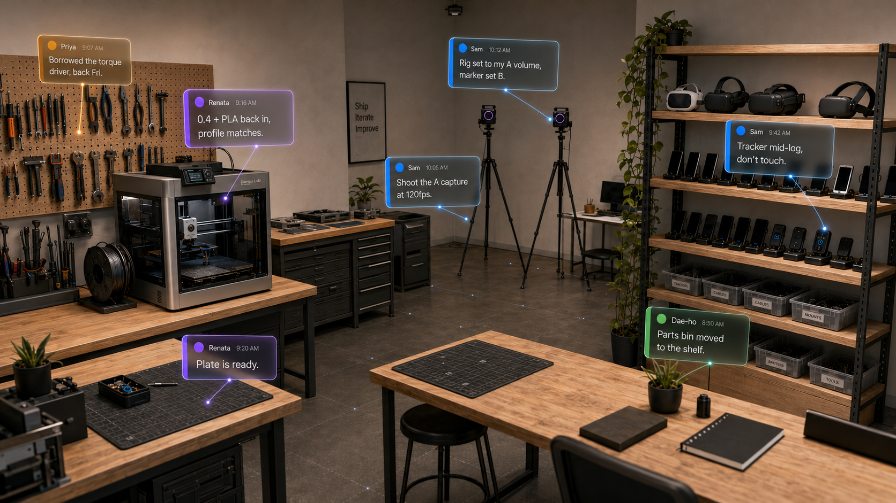
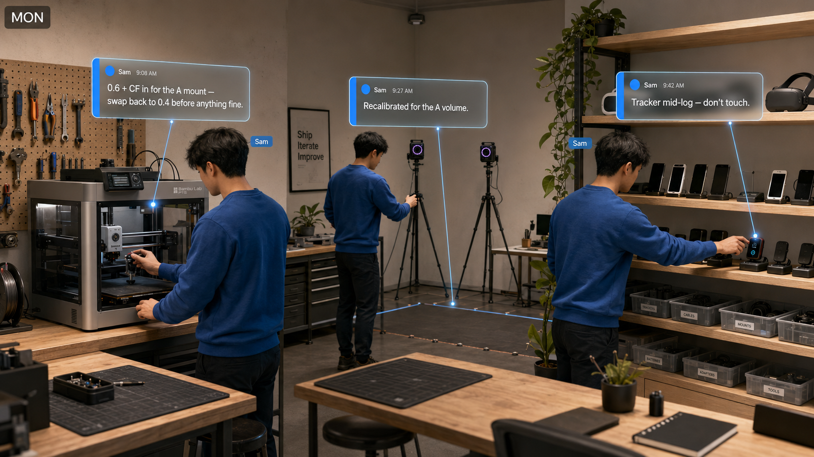
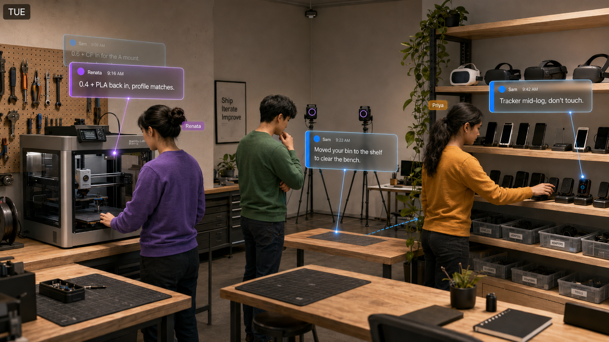
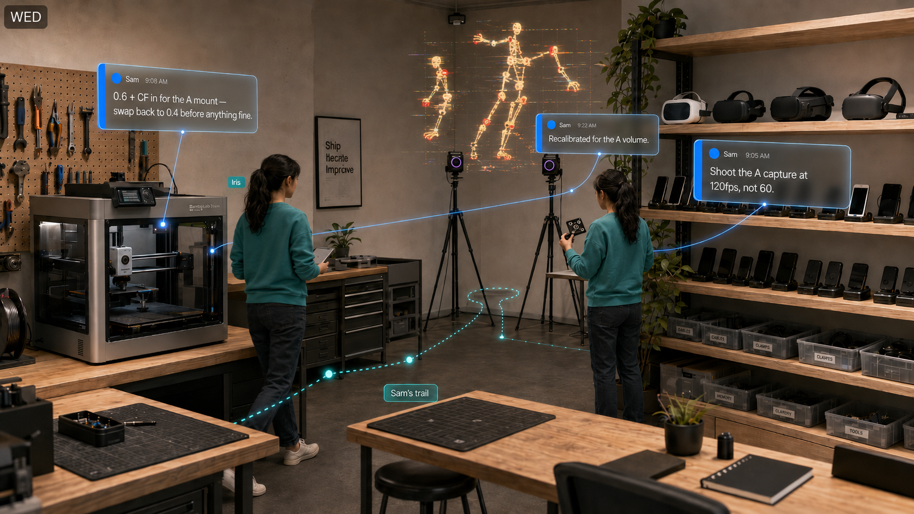
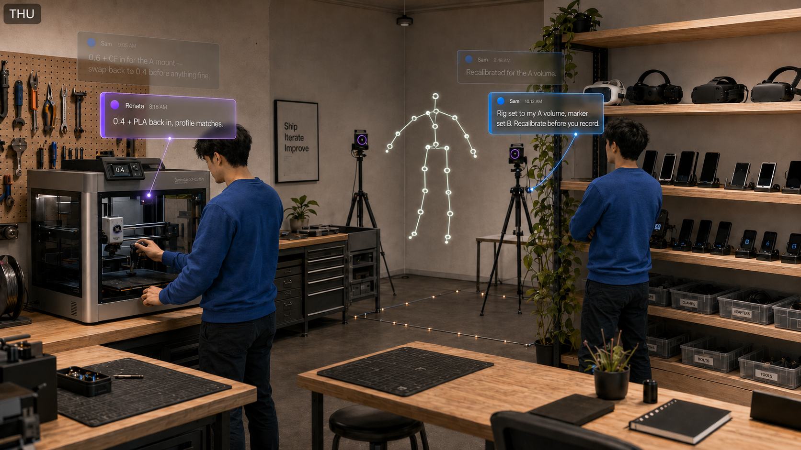
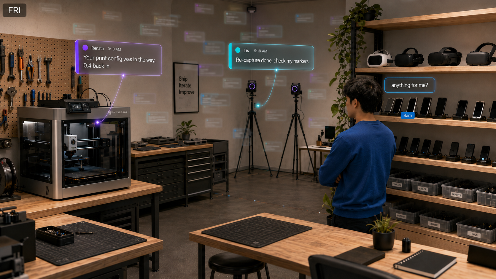
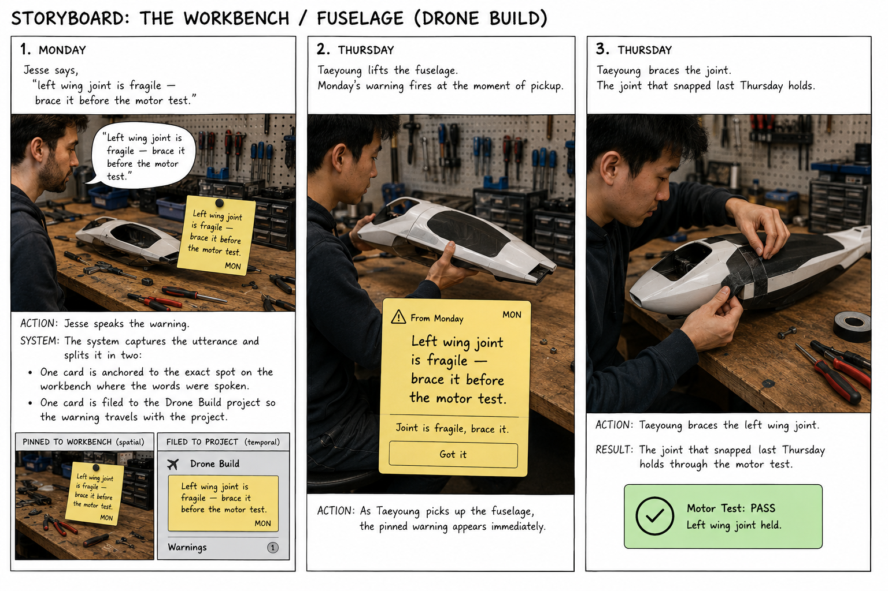
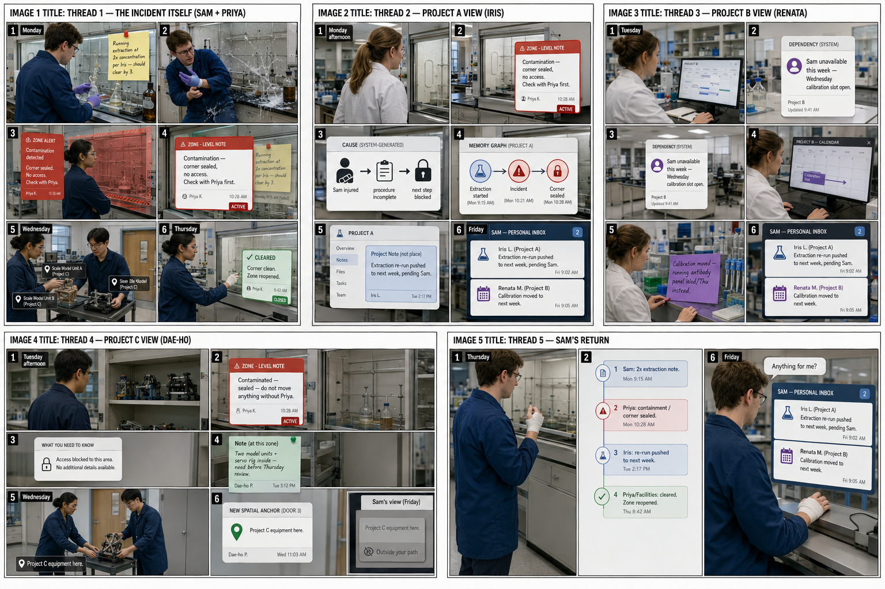

Storyboard
One week in a shared maker lab: a single Monday setup fans out to strangers, a newcomer walks a trail, one note is misread. Rendered scenes first, then a filterable week table and the full prose. Click any image to enlarge.
The room, remembered

Day by day





The full week
One person's Monday setup fans out to four strangers, a newcomer walks his trail, and one note is misread. Click a person to isolate their row and read their arc; the full narrative is below the table.
| Person | Mon | Tue | Wed | Thu | Fri |
|---|---|---|---|---|---|
| SamProject A | seeds 3 place notes (0.6+CF nozzle · rig recal for "A volume" · tracker mid-log) + a project note (A capture 120fps); clears the bench | returns · full replay · resets printer+rig (supersede) · sharper note to Iris | "anything for me?" → 2 cards (Iris, Renata) | ||
| IrisProject A, new | new to A · walks Sam's trail · gets Sam's project note (120fps) routed from the printer · misreads "A volume" as ready-for-her → records → data silently off (breakdown) | Sam clarifies · recalibrates · re-captures clean (2 days late) | gets Sam's clarification only | ||
| RenataProject B | about to print a fine plate; 0.6+CF still in → swaps 0.4/PLA back (her note supersedes Sam's) | gets one note: plate ready | |||
| Dae-hoProject C | parts bin gone from its spot; note at the empty spot points to the shelf | ||||
| PriyaProject D | reaches for a tracker; note: the end one is mid-log → takes another (logging vs sleeping look identical) |
Pick a person above to read their arc.
Sam (Project A)
Sam sets up a Project A motion-capture. Monday he seeds three invisible-state notes at the printer, the rig, and the shelf, and clears the print bench. He is offsite until Thursday, when he returns and walks his stations: each place already shows its current state, the nozzle already swapped back by Renata, and he resets the rig so his Monday notes collapse. Seeing Iris's recording is off, he leaves her a sharper note. Friday, "anything for me?" hands him just two cards.
Iris (Project A, new this week)
New to the project, brought in to run the capture while Sam is away. Wednesday she walks Sam's trail to catch up in ten minutes, then reads his terse "recalibrated for the A volume" as ready-for-her. It was set to Sam's own volume and marker set; her recording comes out silently off. The note reached her; the meaning did not, because she did not share Sam's context. Thursday, after Sam clarifies, she recalibrates and re-captures clean, two days and one wasted session late.
Renata (Project B)
A different project. Tuesday she is about to print a fine calibration plate; Sam's note surfaces at the machine that the nozzle is still a hardened 0.6 with abrasive filament. On the default profile that would have been two hours of ruined print. She swaps 0.4 and PLA back, prints, and her note supersedes Sam's so the printer shows what is true now. Friday she gets a single note: her plate is ready.
Dae-ho (Project C)
A different project. Tuesday he goes for his parts bin and finds it gone from its spot. A note at the empty spot points him to the shelf, where Sam had set it aside to clear the print bench. His stuff moved, and the space told him where it went, at the place he looked for it.
Priya (Project D)
A different project. Tuesday she reaches for a shared tracker and a note surfaces: the one on the end is mid-log. A logging tracker and a sleeping one are identical; a camera could watch the shelf all day and never tell them apart, and the difference lived only in Sam's head. She takes a different one.
The full week, in prose
The same week as a narrative.
Setting. A shared maker lab: one Bambu printer, a motion-capture rig in the corner, a shelf of shared test devices, a soldering station, a pegboard tool wall, and five workstations. Several projects share the printer, the rig, and the shelf, but the people rarely overlap in time.
Monday. Sam seeds three invisible notes.
Sam is setting up a Project A motion-capture session later in the week. It needs a stiff custom marker-mount, so at the Bambu he pulls the standard 0.4 nozzle, threads in abrasive carbon-fiber filament, and drops in a hardened 0.6. He starts the print and says into the room, without breaking stride: "0.6 hardened nozzle and CF in for the A mount. Swap back to 0.4 and PLA before you print anything fine. This one runs till about three, don't cancel it." The sentence pins itself to the printer.
He crosses to the mocap rig and re-runs the calibration for his capture volume. From anywhere in the room the rig looks exactly as it did yesterday. He says: "Recalibrated the rig for the A volume this morning." Pinned to the rig. On his way out he takes a shared tracker off the shelf and starts it logging a battery test. Its screen is dark; it looks idle. "This tracker's mid-log, screen's off but it's running, leave it." Pinned to the shelf. He nudges a couple of other people's spools off the print bench to make room and heads out; he will be offsite until Thursday.
Before he leaves he adds one more, but this one he files to the project rather than a place: "For whoever runs the A capture, shoot it at 120fps, not the default 60, or the fast motion blurs." It is not pinned to a fixture; it belongs to Project A and travels with the work.
Four sentences. Three named a place, the fourth a project. None named a recipient, and none could, since Sam has no idea who prints, captures, or reaches for a tracker next. On a channel each would have cost more to send than it was worth to him, and would have gone unsaid. Here they cost a breath.
Tuesday. Three strangers, three near-misses.
Renata, on a different project, comes to print a fine calibration plate. As she lines up the job, Sam's note surfaces at the machine: 0.6 and CF are still loaded. She stops. On the default profile, a fine plate through an abrasive 0.6 would have been two hours of ruined print. She swaps the 0.4 and PLA back, prints, and says: "0.4 and PLA back in, profile matches again." Her sentence replaces Sam's on the printer; the machine shows what is true now, not a stack of history.
Priya reaches for a tracker on the shelf. Sam's note surfaces: the one on the end is mid-log. A logging tracker and a sleeping one are identical: a camera could watch the shelf all day and never tell them apart, and the difference lived only in Sam's head. She takes a different one. Dae-ho goes to grab his parts bin and finds it gone from its spot; a note at the empty spot points him to the shelf, where Sam set it aside to clear the print bench.
Why not just a channel? The lab does have a #printer channel, and Sam could have posted there. But by the time Renata is standing at the machine about to print, that message is days deep in scrollback, and no one re-reads a channel before they press print. A channel is also a log, not a state: it cannot answer "is the 0.4 back in right now?" On the printer that is a state, superseded the moment the nozzle is swapped, so the next person always sees the current answer, not the history.
Wednesday. Iris joins, walks Sam's trail, and grounding slips.
Iris is new to Project A this week, brought in to run the capture while Sam is away. She has never touched his setup. She asks the room for Sam's trail, and it walks her through his week in order: the printer where the mount was made, the rig he recalibrated, the shelf and its logging tracker. Ten minutes, and she has what would otherwise have been a scramble of messages, or would have gone unasked.
One of the notes waiting at the rig was never left at the rig at all. Sam spoke it at the printer, but because it belongs to Project A and Iris is running the A capture, it followed the project to her here: shoot at 120fps. She sets the frame rate. This is the thing a place alone cannot do, carry a note to where the work continues rather than where the words were said.
At the rig she reads Sam's note: "Recalibrated the rig for the A volume this morning." She is on Project A, so she takes it to mean the rig is calibrated and ready for her. But "the A volume" was Sam's own capture volume and marker set, not a blessing for anyone on Project A, and Iris, new, has no way to know that. She loads her markers and records. The rig throws no warning; the calibration reads valid. Her data comes out subtly, silently off, the kind you only catch days later in processing.
The note reached her; that half worked. But "the A volume" meant a specific setup to Sam and "ready for me" to Iris, and across the gap there was no one to catch the difference in the moment. The space delivered the words; it could not make them land the same way in a head that did not share Sam's context.
Thursday. Sam comes back, and so does the repair, late.
Sam returns and walks his stations, and each place shows him its current state, not a history to scroll. At the printer, Renata has already swapped the nozzle back, so her card stands current and his own is collapsed behind it. At the rig he resets the volume; his Monday notes fold away, superseded, the places clean again. He sees Iris's recording is off, finds her at the rig, and they trace it to the calibration. He leaves a sharper note this time: "Rig is set to my A volume, marker set B. If that is not your setup, recalibrate before you record." Iris re-runs her calibration and re-captures; it comes out clean. The repair happened, just two days late, and at the cost of a wasted session.
Friday. Different people, different mail.
By Friday the room holds dozens of notes, from five people across five fixtures. If it replayed all of them, anyone walking in would drown, the same spam problem, now in space. Pinning notes in space is the easy half; letting a room accumulate a week and still hand each person only their slice is the half that needs structure, and that structure is the Memory Graph. So each person asks the room the same question, "anything for me?", and each gets a different, short answer: superseded notes collapsed, expired ones gone, everything not for them filtered out. Iris gets Sam's clarification and nothing else. Renata gets a single note that her plate is ready. Sam gets two: Iris's question about the re-capture, and Renata's note that his config had been in the way. Dae-ho's bin, Priya's tracker, the other projects' churn: none of it surfaces for anyone it does not belong to.
Archive: earlier drafts
Earlier storyboard drafts, kept for reference. The 3D printer and drone boards use the old Jesse/Vasco scenario; the five-thread board is the earlier wet-lab version, both superseded by the maker-lab week above.
13D printer (nozzle + filament)
![Storyboard: 3D printer nozzle and filament thread. Jesse swaps in the 0.6 nozzle Monday to rush a draft and pins a note to the printer. Tuesday, Vasco walks up to print a fine part and the note surfaces right at the machine before he hits print. Jesse swaps the 0.4 nozzle back in. Vasco confirms 0.4 is back in and the profile matches, which supersedes Jesse's note so the printer shows current state rather than a growing pile. While loading filament, Vasco adds a second note at the same spot about the PLA roll absorbing moisture.](img/storyboard_3Dprinter.png)
2The workbench / fuselage (drone build)

3The full week, all threads

Spatial Memory · CHI 2027 · see the header.